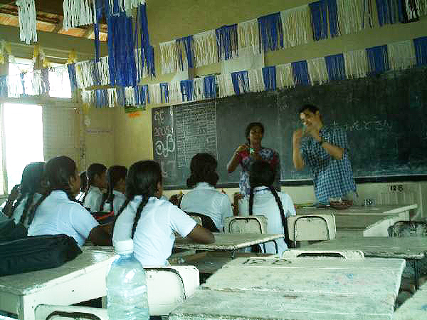
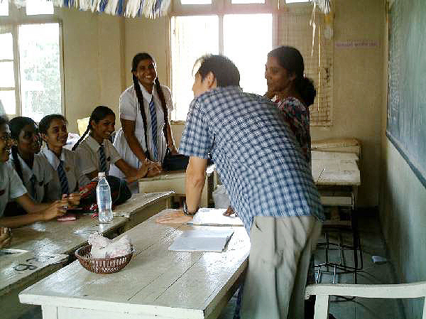
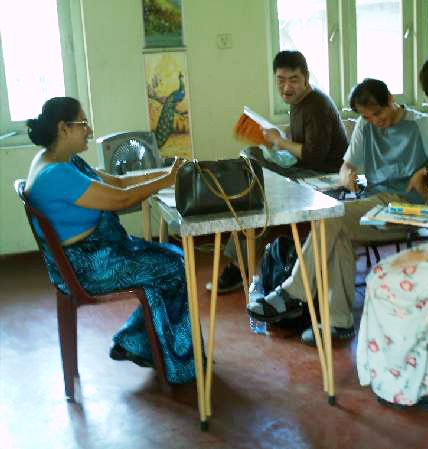
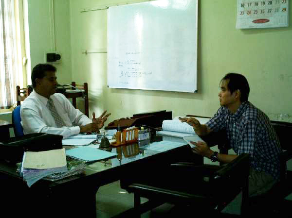
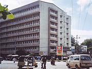

参加者レポート
松本直素さま スリランカ参加レポート
スリランカでの1日
| 7:00 |
起床。起きるのは7時ですが、こちらには日本にいない鳥（でもスリランカでは至る所にいる。オウムなのかなぁ・・・未確認！）が朝早くから華麗な声で朝を教えてくれるので、目覚めはもっと早いです。起きると、周りには見たことの無い、鳥、虫、動物がいて楽しませてくれます。 |
|---|---|
| 7:30 |
まずはシャワーから。お湯はでませんが、気候が暖かく、水（井戸水なんです）も、比較的暖かいので気持ちよく浴びられます。その後、歯を磨いていると、お母さん（お母さんのことは、「アンマ～」って言います）がミルクティーを入れてくれます。ミルクも砂糖もたっぷり入れるのがスリランカ流。暑いので砂糖が欲しくなるのかもしれません。日本では砂糖を入れない私ですが、おいしく紅茶をいただいています。さすが本場だけに香りと味わいの深さは、なかなか日本では味わうことができません。また、紅茶をくれるときのお母さんの優しい笑顔がとても素敵です。 |
| 8:00 |
朝食。毎日、カレーが出ます。日本で想像するようなカレーと違い、さらさらとした印象。小皿にいろいろな種類のカレーがあって、少しづつとって、ご飯（ご飯の代わりにロティだのホッパーだのスリランカ独自のものが出てくることもある。）と混ぜて食べます。当然、食べてみる価値、十分！ |
| 8:30 |
外出。今日は、近くの学校を訪問して、日本語教師のボランティア。いつものように、サーンタさんが迎えに来てくれる。当たり前だけど、先生をしたことはないので、ちょっと緊張しながら学校へ。また、行ったところが、女子校だったので、さらにちょっと緊張。入ったとたん、そのエネルギーにびっくり。どこの国も子供はとても可愛いですが、この国の子供達は特に目がきれいで印象的です。目が会うと皆、微笑んでくれるので、こちらが癒された気持ちになります。いざ、教室に入って、「グッド・モーニング！」と声を掛けると、皆から「おはようございます！」という明るい返事が！日本語を習っているとは聞いていたのですが、挨拶、数の数え方、体の場所の名前など、教えようと思っていたことはほとんどクリアしていてびっくりしました。   一緒に折り紙をしたりして、あっという間の楽しい時間を過ごしました。帰りにサインをねだられたりして・・・。皆で折った鶴にサインしました。来年、お父さんの仕事の関係で、日本に来るっていう子がいて、住所を教えてあげました。連絡くるかな？ |
| 12:00 |
ステイ先に帰宅。昼食の後、午後のレッスンが始まるまでに洗濯をすることにしました。スリランカではほとんど手洗い。ステイ先の家にも、洗濯機はあるのですが、面倒だからという理由で、誰も使わない・・・。外の井戸で、たらいを使って手洗いします。洗濯していると、すぐそばまで、鳥やらリスやら寄ってきて遊んでいます。「おいら白雪姫かい！」って気分になります。 |
| 14:00 |
しばしの休息。お母さんに入れてもらった紅茶を飲みながら、本を読んだり、メールをチェックしたり、はたまた昼寝をしてみたり。幸せなひと時です。 |
| 15:30 |
レッスン開始。さあ！いよいよ本来の目的の英語の授業です。19:30までと時間が長いので気合が必要です。先生は近所に住んでいて、懐中電灯を片手にやってきます（帰りのためです）。もっとも、堅苦しい授業では無く、スリランカと日本の文化の違いや、食べ物の違いなど、興味のあることを題材に、フリートークをしながら、ボキャブラリーを増やし、リスニングとスピーキングを中心に練習をするという形なので、それほど、長くは感じません。それでも、間にお母さんが持ってきてくれる紅茶は、すごく楽しみ！（おいしいし、休憩できる！） |
| 20:00 |
夕食。こちらでは、皆で食べるという習慣がないので、皆好きな時間にばらばらに食べます。けれど、皆、近くにいてくれて、シンハラ語（現地の言葉）を教えてくれます。人によっては、シンハラ語の方が上達してしまうという噂もちらほら。 |
| 22:00 |
リラックスタイム。ステイ先の家族と一緒にテレビを見たり、話をしたり。楽しい、ゆっくりとした時間を過ごします。（あっ！ときどき英語の宿題が出ることも！しかたがないので、頑張ってやります）。外には風の音、虫の声、優しい時間が流れています。 |
| 23:00 |
就寝。お休みなさい。 |
スリランカ留学体験レポート
「英語学習に関していえば、これも良く耳にする言葉ですが、習慣的に日にちをあけずに学習し続けること、これに付きます。一日４時間、週に二日は一日７時間。これは確かに長いです。日によっては『疲れた～。』と思うことも確かにあります。
ですが、やはり『継続こそ力なり』です。

聞き取れなかった言葉も、それなりに聞こえてきますし、意味の解らない単語が混ざっていても、全体を通しての意味を想像して理解することが出来るようになってきます。本を読むのも同さまです。知らない単語でも、おおよその意味を想像することができる確立があがってきます。
グループレッスンはありますが、ほとんどのレッスンが個人レッスンであることも、このプログラムの特徴です。大抵の海外留学は、ホームステイしたとしても、授業の多くは学校で他の生徒と合同で行われるため、生徒同士は、日本語を使用してしまうことが多いようです。その点、このプログラムでは、他の日本人に接する機会が少ないので、英語学習の上では効率的であると言えます。
現地の人は、主に母国語であるシンハラ語を話しますが、彼らは義務教育で５歳から英語を習うため、多くの人が第二言語として英語を話すことができます。日本人は読めて書けても、聞けない話せない、だから外国人が寄ってくるのが怖い、という方が多いと思います。ですが、毎日、強制的に英語を使うことで、少しずつ聞けて話せるようになります。
何より通じないことに慣れ、聞き返すことが怖くなくなります。これはとても大切なことだと思います。日本語でも聞き返すこと、相手の言うことを理解しようとする努力から、会話が成り立ちます。母国語でも決して全ての言葉を知っている訳ではありません。会話は言葉の探りあいです。
もうひとつ、スリランカって英語が第一言語じゃないから、訛っていたり変な英語をしゃべったりしないか？とい不安を持つ方も多いと思います。ごもっともです。ですが、経験から言うと、英語圏の人たちも含めて、全ての国の人たちが訛っています。スリランカの人は、かえって綺麗な英語を話す人が多いようにも感じます。
どの国にも綺麗な英語を話す人もいれば、良く聞き取れない言葉を話す人もいます。スリランカも同さまです。先生の中にも、綺麗なブリティッシュ・イングリッシュを話す先生もいれば、訛っていて始めは良く聞き取れない先生もいます。
数日付き合えば、どんな英語でも少しずつ聞き取れるようになりますが、どうしても他の先生が良いという場合でも、このプログラムでは親切に対応していただけるので大丈夫です。他の先生の英語も聞いてみたい、そんなときにも対応していただけるので、長く滞在される方は、時々先生を変えてみるのも良いかもしれません。
私は一ヶ月半の滞在でした。ショートのステイでも日本にいるよりはかなり効果的だと思いますが、もし３ヶ月滞在できれば、だいぶ理解できるようになると思います。
また、物価の面でも、滞在しやすいと思います。日々の生活では、ほとんどお金を必要としません。バナナは一房で15ルピーほど。（現在1Rs＝0.9円ほど）水も1.5リットルのペットボトルが40Rsほどで売っています
品物によって割安感は大分異なりますが、町で少しご飯を食べたいという程度であれば、大抵の場合100～400Rsも出せば、十分です。不足する日用品を買う、ときどき外でお茶を飲む、それだけなら、2000～3000Rs/月もあれば十分ではないでしょうか。こんな物価の安さもスリランカの魅力の一つだと思います。
もうひとつ、他国へステイする場合に、心配になる大きな要因のひとつに食べ物のことがあります。スリランカは毎日、カレーを食べます。そう聞くと、毎日、同じものを食べていたら飽きるに違いない、と思う方も多いと思います。結論から言うと、スリランカ以外の国へ行って日本料理が食べたくなる度合いとそれほど変わりはありません。毎日、カレーだからと言ってすぐに飽きてしまえるようなものではありません。
あえて言えば、カレー料理＝スリランカ料理、という感じです。毎日、日本料理を食べるからと言って、別に、毎日、すしを食べ続けているわけでは無い、そんな感じです。全ての料理がスパイシーですが、食べられないほど辛い、という料理には結局、一度も出会いませんでした。
私の場合、一ヶ月を超えるあたりから、少し日本料理が恋しくなりましたが、結局、最後までスリランカ料理で通しました。もっともどうしても日本料理や中国料理、他のものが食べたい！という方はコロンボまで行けば、大抵のものがありますので、ご心配には及びません。
とはいえ、他国での滞在ですから、習慣の違いによる戸惑いも無い訳ではありません。どこの国に行ってもそうですが、それぞれの国によって“常識”が違います。戸惑いはあって当たり前です。幾つか例をあげます。
1．スリランカは仏教国であるということ。国民の多くが仏教徒であり、習慣の多くは仏教的な考え方によるものです。仏教がインドから伝わった日、など仏教に関係する日は、休日となり、国をあげてお祭りをします。また、その教えから、生き物を殺さない、いじめない、という考え方も深く根付いていて、家庭によっては、日本では害虫である蚊や蟻などが家にいても退治しないという考え方を持っている家もあります。
2．トイレのこと。こちらでは、基本的にトイレで紙を使用しません。トイレにはお尻を洗うためのノズルがあって、皆、これを使用します。町のレストランや観光地でも、紙の無い所が多いので、どうしても、紙が必要、という方は、外出する場合には、紙を所持していくことをお勧めします。
3．ちょっとデンジャラスな車の運転。アジアの他の国でも、そうですが、スリランカでも、皆、車を運転する際、少しでも前に行きたい！と常に思っています。ですから、いつでもどこでも、抜きつ抜かれつして走ります。ですが、こちらの人は、その運転マナーに慣れていることと、やはり日本に比べれば車の数も少ないことなどから、事故を見ることはほとんどありません。ただ、日本のように遅い車がいてちょっと嫌でも、その後ろに並んで走るという気持ちは全く無いので、始めは少しびびります。
全体を通してみれば、このプログラムはとても良いプログラムであったと感じています。英語学習はもちろんのこと、観光の手配や、それ以外の身の回りのこと（ちょっとスーパーまで行きたい、両替したい、お寺を見に行って見たい、お祭りを見に行きたいなど）についても気軽に、サーンタさんが付き合ってくれます。ちょっとシャイな方ですが、目の奥を覗けば、その人柄の良さが見て取れます（笑うとちょっと可愛いです）。
私の場合、コンピュータを持って行って、自分で接続をしていましたが、週二回行くオフィスでも、コンピュータを使わせてくれるので、メールのチェックなどもできます。日本のBeインターナショナルに連絡すると、かなり機敏に対応していただけるので、言葉に不安のある方でも『日常の不安などに関して伝えられないのではないか？』という心配はほとんど要りません。
どなたでも、きっと、楽しい、そして有意義なスリランカ生活を送れると思います。」
津波災害救援活動および医療事情レポート

「光り輝く島、スリランカ。こちらに来て一週間が経過しました。
この間、津波被害の被災地や、被災地の学校を訪問して、衣服や楽器、時間を知らせるための時計台の寄贈などをNPO法人TFGに同行し、セレモニーに参加したりしていました。
行政の対応の遅れにより、未だ多くの国民がテントや仮説住宅で暮らしています。そんな人たちは、食料も最低限のもので生きているようです。そんな中でも、子供達が輝くような目で、きらめくような笑顔で迎えてくれたのが、嬉しくもあり感動でもありました。

この国の特徴のひとつとして、政府の力の強さがあります。津波被害に関する他国からの支援金も政府に入るため、効率よく被災民には届きません。理由のひとつとして、他国からの支援も、金額を提示されただけで、未だ、入金されていないから、というのが政府側の言う理由のひとつになっています。
この国で、まともな家を建てるためにはおよそ250万ルピー（1Rs＝約1円です）程度が必要ですが、国から約束されているのは、家が全壊した場合で25万Rs，半壊で15万Rsだけです。また、家が辛うじて残ってそこで生活している人たちも、海辺から100mの場合、強制的に移動命令が出ています。
私がステイしている家は、父親が石油関連の技師でサウジアラビアに出稼ぎに行っているので、日本の平均月収の半分ぐらいの収入が月にありますが、震災にあったような漁業民は、およそ、10000Rs/monthほどの収入で生活しています。
その場合、食費だけで、収入のほとんどが消えてしまいます。そんな人たちが、政府の支援金だけで、新しい家を建てられる訳も無く、困惑しているというのが現状です。津波被災地に行った際も、垂れ幕を大勢で掲げ政府に対して改善をアピールしている姿が見受けられました。
また、途上国特有の貧富の差も大きくあります。これも政府の力が強く、そもそも教育システムが、貧富の差を生むような要素を含んでいるからです。
こちらでは、5歳になると公立の学校に全員が通います。卒業までは13年間、18歳になるまで基本的には通学しますが、16歳になったときに大きなテストが行われます。これに合格するのは、およそ15%だけ。落ちた生徒は学校を離れ、自費で職業訓練校に通うか、露天商のような小さな仕事を手伝うか、無職となり家にいるか、などの道を選ばなくてはなりません。
また、受かった生徒は卒業後、もう一度大きなテストがあり、これに受かる約20%の生徒だけが、エリートとして政府関連の仕事につき、いろいろ優遇されることになります。
例えば、あまり働かなくてもいい（といろいろ教えてくれた人が言っていた）とか、年金が貰えたり（他の人には年金という制度は反映されません）、年に3回無料で国内の旅行ができたり、などです。もらえるサラリーは2万Rs程度だそうで決して高額ではありませんが、他の国民よりは安定しており余裕のある生活が送れるようです。
そのような制度であるため、途中で脱落した人たちや、能力はあっても、政府を快く思わず政府の機関で働く道を選ばなかった人達（国民の多く）は、当然政府を良くは思っていません。
一方で良い面もあります。医療に関して言えば、各市に政府が建てた病院が存在し、全ての国民が無料で医療を受けることができます。民間病院も存在しますが、この国では、医者も固有の病院に属するのではなく、個人事業主となり、診察室など場所を医療機関に借りるという体制をとっているようです。
ですから多くの医者は、政府運営の病院をメインにし、曜日や時間帯により、メインの病院が終ってから、民間でも働く体制をとっているようです。したがって、提供される医療、エキップメントの質も、政府機関の方が良いようです。
民間病院にかかるメリットとしては、お金がかかるものの、空いていて早く見てもらえ、入院する場合でも部屋が 綺麗などの理由で、一部のお金持ちが行くという状況のようです。

2005年5月28日
今日は、現在滞在しているガンパハ市の病院を訪問しました。施設を見学しながら、直接院長先生からもお話ししていただきましたが、悲しいかな、半分くらいしか解らない。。。解った範囲でお話しします。
ガンパハ市（人口は何人かに聞いたが、だれも知らない・・・）には、政府運営の病院が三つ、個人で運営されている病院が１つあります。今回訪問した病院のひとつは、政府運営のもので、この市で一番大きなものでした。

病床数は580床、ドクターは100人、ナースは260人だそうです。現在、入院患者は450人、外来には900人/日程度の患者が来院されると言っていました。
大きな特徴が二つあると話してくださいました。一つは、患者さんに費用が一切かからないこと。費用は100％政府からまかなわれるので、患者負担はまったくありません。もう一つは、どの政府運営の病院にかかっても、同じ医療が受けられること。ガンパハ市に関して言えば、３つの病院で連携が取れているので、このうちのどの病院にかかっても、必要であれば、設備の整った病院（必要であれば、コロンボのもっと大きく、設備の整ったところへ搬送するとのこと）へ、行き、出来うる限り最高の医療が受けられると申しておりました。
病室は1mくらいの高さの敷居で区切られているだけで、その中に、6～8個のベットが並べられていました。プライバシーは全くありません。外来も会計も、座って待つのではなく、皆それぞれの窓口、診察室に長蛇の列を作って並んでいます。外来待ち時間なんて、答えてももらえませんでした。それでも、無料だから多くの国民は政府運営の病院に行きます。
X-線室には、4年前に購入した透視台、一般撮影装置、ポータブルがありました。透視台はデジタル関係のパーツが壊れているが、アナログパーツは動くのでほぼ問題無いとのこと。ちなみにこの装置はシマズ製で、2500万で購入したとこのと。その内1000万程度が税だそうです。
コロンボの病院なら、高額の運営費が降りるので修理ができるが、この病院では、資金が無く簡単には直せないそうです。
なによりも、病院から発するあまりにも大きなマイナスエネルギーに圧倒されました。入ってすぐに逃げ出したくなるような、圧倒的な暗いエネルギー。日本の病院では、ここまで感じたことはありませんでした。
個人病院も少し見ましたが、ベット数20床。ベット代が2000Rs/日。医者の診察があると＋2000Rsがかかるとの事。医者は、ほとんどの医者が日中は政府の病院で働いていて、夕方からプライベート病院に来るということなので、昼間はほとんど医者はいません。
たいした設備では無い（X-線装置は20～30年くらい前のものが一台だけあり、撮影したフィルムは外に干すという見たことも無いような単純撮影のもの）ですが、待つことはほとんど無く、やはりお金のある人はこちらを選ぶようです。」